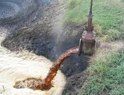
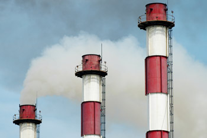
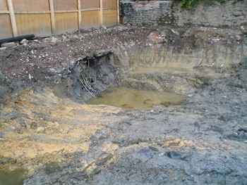
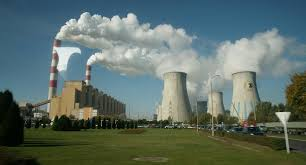
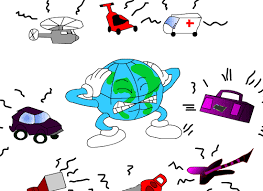
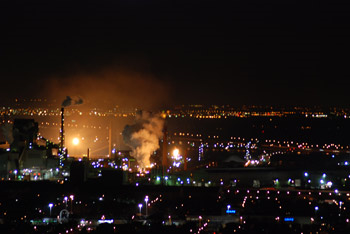

TIPOS DE CONTAMINACION

El aire de forma natural se compone de 78% de nitrógeno, 21% de oxígeno, 0,9% de los gases de óxido y 0,1% de gases inertes. Cuando este equilibrio se altera, provoca trastornos de proporciones graves.

Suelo pelado de su fertilidad natural mediante el uso de sustancias químicas artificiales, como los pesticidas, insecticidas, etc maduración agentes que se conoce como “contaminación del suelo”. Las plantas dependen de los compuestos nitrogenados presentes en el suelo para su nutrición. El uso de insecticidas, pesticidas y otras sustancias químicas artificiales absorbe el nitrógeno del suelo por lo que es apto para el crecimiento de las plantas. Las plantas son responsables de mantener el suelo de una manera firme así, cuando las plantas no pueden crecer divide el suelo, lo que conduce a la erosión del suelo.

Aumento de la temperatura en el ecosistema debido a la liberación de energía de calor excesivo en el medio ambiente por métodos artificiales o desastres naturales que se llama “La contaminación térmica”. Generalmente, las industrias manufactureras liberar una gran cantidad de energía térmica que se transfiere a los cuerpos de agua y aire. Incluso los vehículos que tienen motores de combustión liberan una gran cantidad de energía térmica, ya que requieren altas temperaturas para funcionar. El dióxido de carbono tiene una propiedad de bloquear el calor salga de la atmósfera y por lo que el calor que viene del sol es atrapada en la atmósfera.

Resultados térmicas de contaminación en un aumento de la temperatura, que es la principal causa del derretimiento de los casquetes polares, lo que a su vez conduce a un aumento de los niveles de agua. La contaminación térmica ha aumentado considerablemente desde el siglo diecinueve que resulta en una Tierra más caliente.
Contaminación radiactiva se produce cuando “RADIACTIVO” desintegrarse liberando metales peligrosos rayos beta que pueden causar cáncer y otras enfermedades mutativas. Este tipo de contaminación puede ocurrir por cualquiera de los vertidos de residuos radiactivos de las centrales nucleares en los cuerpos de agua, daños en los reactores nucleares con miras a la contaminación radiactiva que duraría muchos años y muchos más. En la Segunda Guerra Mundial, cuando EE.UU. atacó a Hiroshima y Nagasaki de Japón, la bomba atómica dejó una huella radiactiva que conduce a enfermedades altamente transformadoras. Por lo tanto, la mayoría de las personas que sobrevivieron al bombardeo atómico finalmente murió de cáncer y mutaciones.

Hay diferentes cualidades de los sonidos. Los sonidos que no son agradables de oír se llaman “ruidos”. Así que un exceso de ruido en el exterior conduce a la “contaminación acústica”. Esto puede ser experimentado por bocinazos demasiados vehículos en las carreteras, maquinaria pesada está operando a la intemperie (por ej, un martillo neumático), los trenes, los clubes, las multitudes más pobladas y muchos más. La contaminación acústica es conocido por causar estrés mental y la depresión. También puede causar daños en el tímpano, que puede causar sordera. La contaminación acústica tiene más de un efecto psicológico en lugar de uno físico.

La iluminación brillante en funciones, grandes ciudades, etc causa “contaminación lumínica”. El exceso de luz en la retina provoca gran incomodidad en los ojos, especialmente en condiciones de poca luz, como durante la noche. Las luces brillantes tensión de los ojos y también le dan dolores de cabeza y migrañas. Si observamos, la contaminación lumínica, contaminación térmica y la contaminación acústica son todos los tipos de contaminación que son causadas por las diferentes formas de energía.
